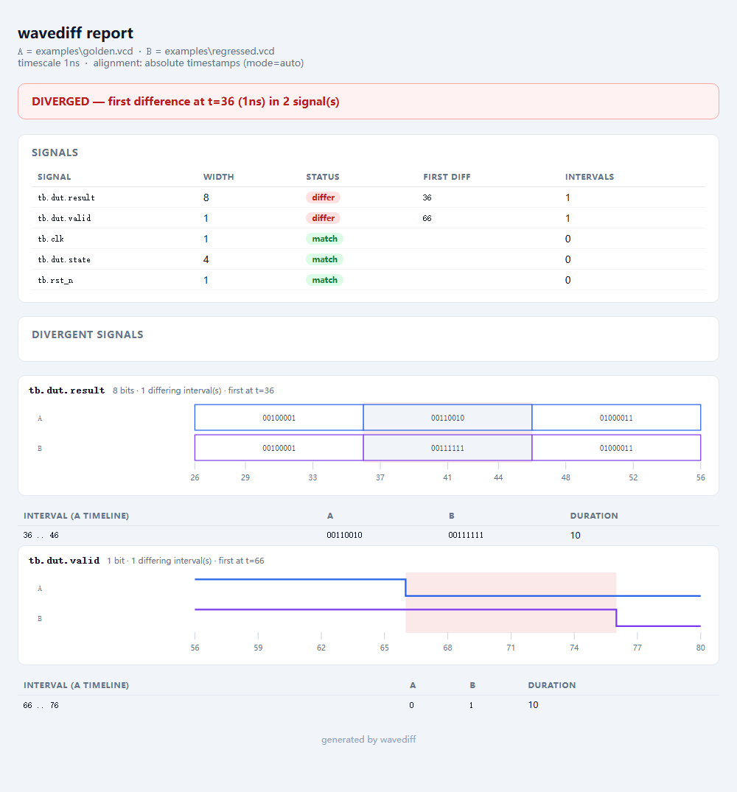

wavediffFind the first moment two simulation waveforms disagree. A VCD diff for Verilog and SystemVerilog regression — exact divergence time, CI exit codes, and a self-contained HTML report.
pip install git+https://github.com/Sonnet-dawn/wavediff
No dependencies — pure Python 3.10+, standard library only. Reads VCD; nothing to compile and nothing to license.
You changed the RTL. The test still passes. You need to know what else moved — and the only tools that answer that are Verdi and SimVision, which cost more than a laptop and only read FSDB.
The waveform equivalent of git diff has been missing, so the
workaround is a human scrolling two synchronised waveform windows looking
for the one step that happens in a different place. That is slow,
unreliable, and invisible to CI.
$ wavediff golden.vcd regress.vcd --html diff.html DIVERGED first difference at t=36 (1ns); 2 differ, 3 match t=36 tb.dut.result A=00110010 B=00111111 (1 interval) t=66 tb.dut.valid A=0 B=1 (1 interval)
The exact cycle, the hierarchical signal name, and the interval — so a one-cycle glitch is distinguishable from a permanently stuck signal.

One self-contained file: inline SVG, no scripts, no network requests. It works from an email attachment or a shared drive. Open the live report →
none, auto
(majority vote), shift, reference — because two
dumps have no guaranteed common time origin, and a naive diff drowns the
one real change in hundreds of phantom ones.0 identical,
1 diverged, 2 error.